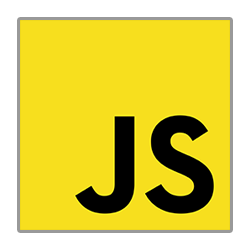

Je suis actuellement à la recherche d'une expérience professionnelle en tant que développeur web, afin
d'approfondir mes compétences dans ce milieu et trouver un travail qui me correspond.
Compétences :


- Bonne connaissances en « HTML5, CSS & JavaScript »
- Connaissances en « SQL , MySQL & ORM Sequelize » pour la gestion de base de données
- Notion en développement avec le framework « React.js »
- Réalisation d'API REST à l'aide d' « Express & Node.js »
- Notion en développement & gestion de base de données avec « MongoDB »
- Utilisation de « Git & GitHub » pour versionner des projets
- Utilisation du pré-compilateur « Sass » pour la structure du design
- Intégrer des maquettes de site web
- Utilisation du logiciel « Adobe XD & Figma » pour créer des maquettes web
- Niveau Anglais intermédiaire / professionnel
- Utilisation du logiciel « Visual Studio Code » pour éditer du code
-
Connaissances en hardware / software ( Installation OS (Linux,Mac,Windows), Dépannage Windows, Montage
Ordinateur,etc .. )
- Utilisation du logiciel « Presto » Gestions des stocks
- Utilisation du logiciel « Adobe Photoshop » pour modifier ou créer du contenu multimédia
- Esprit d'initiative, Esprit d'équipe, Sociable, Disponible, Polyvalent
Expériences Professionelles :
-
Magasinier en Cuisine à la Maison de l'Enfance et de la familleGolbey, Vosges - 2013-2016
-
Libre-Service au Marché aux AffairesMise en Rayon - Charmes, Vosges - 2013 (3 semaines)
-
Technicien Informatique à l'Espace A.C.IThaons-les-Vosges - 2011 (3 semaines)
-
Outilleur à Ravel technologieThaons-les-Vosges - 2011 (2 semaines)
-
Decouverte Boucher Traiteur JacquotCharmes, Vosges - 2010 (1 semaine)
Loisirs :
Informatique, Dépannage Informatique, Infographie, Jeux-vidéo, Nature, Vélo